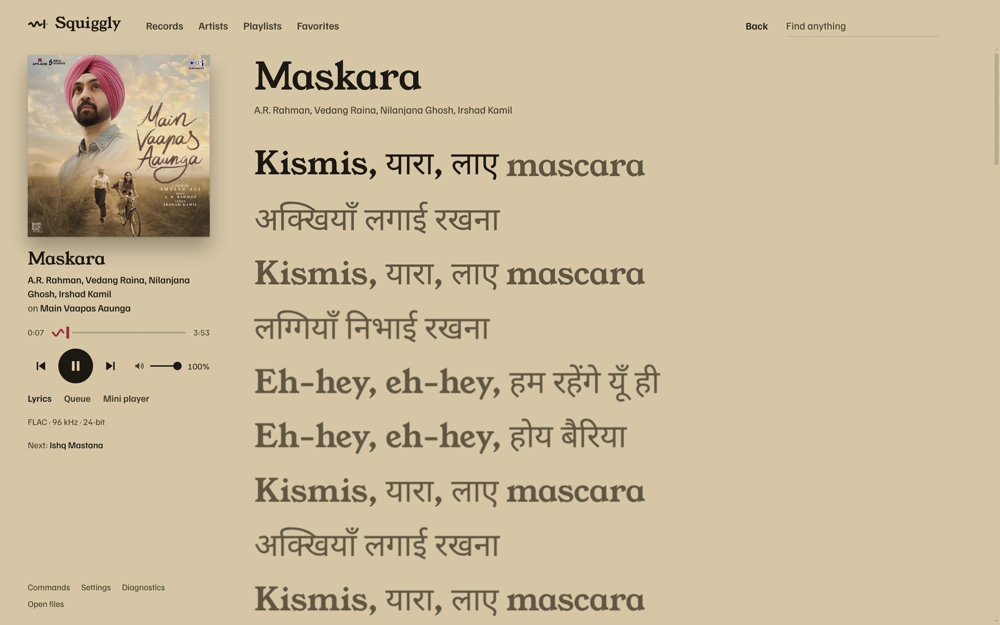
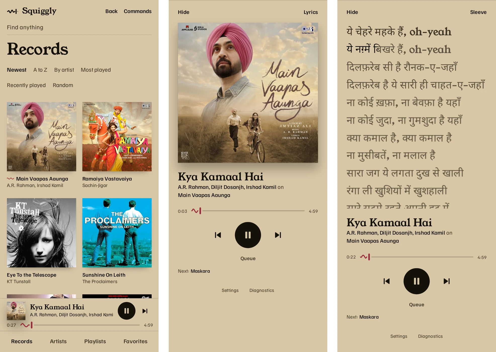

A desktop player for Navidrome that leaves the signal alone.
Squiggly plays your own music from your own server. It asks Navidrome for the original files, plays them through libmpv, and tells you what it knows about the signal path. The window takes its colours from the record that's playing.
Windows 10/11 and Fedora. There are no macOS builds.

What it does
Library
Browse records, artists, playlists, and favorites, and search across them. Build automatic playlists by genre, by decade, and from what's new. Start a radio station from any song, record, or artist.
Queue
Edit the queue and your playlists. The queue follows you between devices through the server.
Lyrics
Synced lyrics fill in word by word. They come from your server; looking up missing ones on LRCLIB is off until you turn it on.
Desktop
A mini player, the tray, media keys, and the system media controls: the Windows media flyout, MPRIS on Linux. It remembers your sign-in, with the password kept only as your system encrypts it. Files from your computer play with their own cover and tags.
Yours to change
Find any action with Ctrl+K. Set your own keys in keybindings.json. Add colour themes as files, and extensions as folders of TypeScript in the config folder that reload when you save.

It leaves the signal alone.
No EQ, no crossfade, no loudness levelling, no ReplayGain. Squiggly asks the server for the original file and hands it to libmpv as it is. Under the song it shows what the file is, and if you turn the volume below 100% it says so, since that's attenuation.
On Windows it can ask for exclusive output. It reports what mpv accepted, and doesn't claim more than it can see.
FLAC96 kHz24-bit
On your phone, from your own machine.
There's a browser version too. It's served from your computer, works on phones, and uses the same library and queue, so what you were listening to at the desk is waiting when you pick up the phone.

Check what you download.
Open source
Squiggly is MIT licensed. The Windows builds include an audio-only, LGPL build of libmpv, built reproducibly from source, and its complete source ships with each release.
Checksums
Each release carries a SHA256SUMS file. Download it beside the build and check:
sha256sum --ignore-missing -c SHA256SUMSNot signed yet
The builds aren't code-signed, so Windows SmartScreen warns you. Choose More info, then Run anyway.
Updates
The installed Windows app updates itself from GitHub releases. The portable exe and the RPM say when a new version is out. Nothing about you is sent.
Download
The latest release is on GitHub. It's early software.